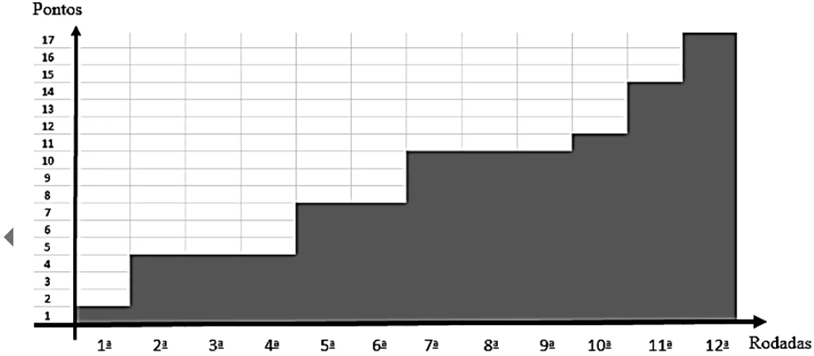
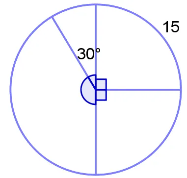
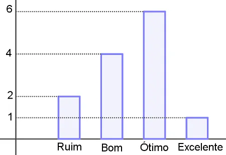
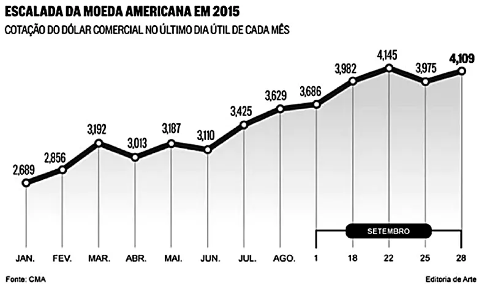

O gráfico mostra o número de pontos de uma equipe de futebol nas 12 primeiras rodadas de um campeonato. Sabendo que, nesse campeonato, em caso de vitória a equipe soma três pontos, em caso de empate soma um ponto e em caso de derrota não soma ponto, assinale a alternativa correta.

Exercício 2
Para construir um gráfico de setores, representando alguma estatística a respeito de sua turma, um estudante fez a divisão ilustrada na imagem e colocou nele um número referente a um dos setores do gráfico. A respeito dessa construção, assinale a alternativa correta.

Exercício 3
O gráfico a seguir diz respeito aos resultados obtidos por uma turma de alunos de um curso preparatório específico para professor de educação básica.
Resultados dos professores no curso preparatório

Para continuar no mercado, é necessário que esse curso aprove pelo menos 70% de seus alunos, que, por sua vez, são professores especializando-se. Sabendo que os aprovados são apenas aqueles que obtiveram resultado ótimo ou excelente, pode-se afirmar que esse curso continuará no mercado?
Exercício 4
Com base exclusivamente nos dados apresentados no gráfico quanto à cotação do dólar comercial no último dia útil de cada mês de 2015, assinale a alternativa correta.

Exercício 5
O dono de uma farmácia resolveu colocar à vista do público o gráfico mostrado a seguir, que apresenta a evolução do total de vendas (em Reais) de certo medicamento ao longo do ano de 2011.